Beranda
Stasiun
Rute
Stasiun Lebak Bulus Grab
Stasiun Fatmawati
Stasiun Cipete Raya
Stasiun Haji Nawi
Stasiun Blok A
Stasiun Blok M BCA
Stasiun Asean
Stasiun Senayan
Stasiun Istora Mandiri
Stasiun Bendungan Hilir
Stasiun Setiabudi Astra
Stasiun Dukuh Atas BNI
Stasiun Bundaran HI